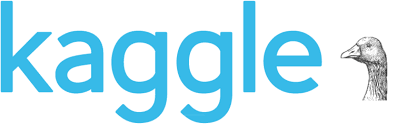
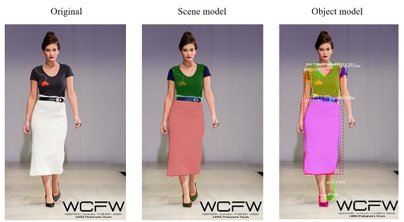
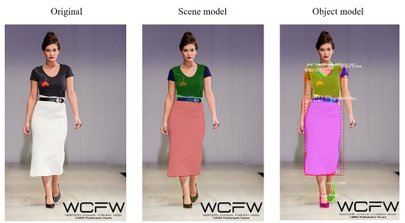
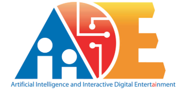
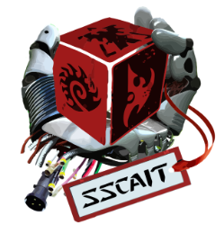
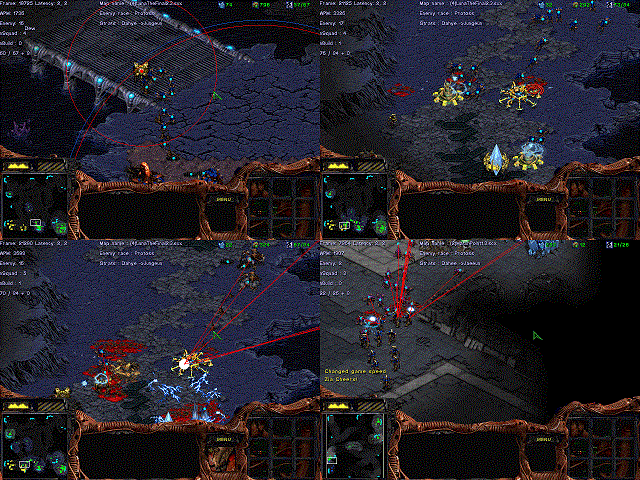

Sungguk Cha
Last update in Oct 13, 2020Best view in wide screen.
This page includes my (under)grad. activities.
Experiences
______________________________
▶ SAIL (Statisitical AI Lab)
Korea Advanced Institute of Science and Technology (KAIST)
Undergraduate Researcher, Adviser: Prof. Jaesik Choi
- Project: Drivable Area Semantic Segmentation on BDD100k dataset
Lab was at UNIST and moved to KAIST AI Graduate School
July 2018 - Feb 2019
▶ ART Lab (Agents and Robotic Transportation Lab)
Ulsan National Institute of Science and Technology (UNIST)
Undergraduate Researcher, Adviser: Prof. Tsz-Chiu Au
- Project: StarCraft AI Algorithm
Dec 2017 - Feb 2018
▶ Computer Vision Lab
Korea Advanced Institute of Science and Technology (KAIST)
Undergraduate Researcher, Adviser: Prof. Sungju Hwang
- Project: Variational Auto Encoder for Text
Lab was at UNIST and moved to KAIST and KAIST AI Graduate School
Sep 2017 - Dec 2017
▶ SKT T-brain research service invited by Hyunsoo Kim (Superb AI CEO, now)
- Passed interviews
- Project: machine learning application for StarCraft
Mar 2017
Projects
______________________________





▶ iMaterialist (Fashion) 2019 at FGVC6
(29/194(Top 15%)) (Dec 2019)
▶ Google Analytics Customer Revenue Prediction
(570/3611(Top 16%)) (Nov 2018)



▶StarCraft:Broodwar AI (Apr, 2016 ~ Feb 2017)
Ziabot (Zerg)
Sungguk Cha (Terran)
▶ Algorithm Problem Solving
Rating Top 3.68%
Solved 351 problems
Solved 140 problems
Honors & Awards
______________________________
▶ NAVER LABS Mapping & Localization Challenge
▷ 8th place
June, 2020
▶ On-Campus Scholarship, Merit based Scholarship
▷ 4-Year Full Scholarship
2014, 2016-2018
▶ Student StarCraft AI Tournament
▷ 4th ranked in student division
2017/2018
▶ Naver UNIST Undergraduate Poster Award, Bronze Prize
▷ Topic: Reinforcement Learning in StarCraft in Real-Time using Deep Learning
2017
▶ Samsung Dream Class Mentoring Scholarship
Spring, 2017
▶ AAAI AIIDE StarCraft AI Competition, 28th ranked
2017
▶ IEEE CIG StarCraft AI Competition
▷ 3rd awarded in student/young professor division
2017
▶ Student StarCraft AI Tournament
▷ 3rd ranked in student division
2016/2017
▶ AAAI AIIDE StarCraft AI Competition, 11th ranked
2016
▶ IEEE CIG StarCraft AI Competition, 10th ranked
2016
▶ Korea Olympiad of Informatics, Encouragement Prize
▷ Regional representative of Daejeon
2013
▶ Daejeon Olympiad of Informatics, Gold Prize, Korea
2013
▶ Korea Olympiad of Informatics, Encouragement Prize
▷ Regional representative of Daejeon
2012
▶ Daejeon Olympiad of Informatics, Gold Prize, Korea
2012
▶ Korea Olympiad of Informatics, Encouragement Prize
▷ Regional representative of Daejeon
2010
▶ Daejeon Olympiad of Informatics, Gold Prize, Korea
2010
Teaching
______________________________
▶ [TA] UNIST/CSE241: Object Oriented Programming
Spring, 2020
▶ [TA] UNIST/CSE251: System Programming
Fall, 2019
▶ [Tutor] PyCon Korea 2019
▷ Topic: Explainable AI
August, 2019
▶ [TA] UNIST/ITP117: Introduction to AI Programming II
Spring, 2019
▶ [TA] UNIST/AHS161: What is "I"?
Spring-Fall, 2017
Copyright 2019 - 2020. Sungguk Cha all right reserved.